Baseline geometry of the hub carrier, with the bolt-hole interfaces highlighted in red.
The hub carrier connects the wheel assembly to the suspension of an ultra-efficient, lightweight battery-electric vehicle built for endurance racing (Shell Eco-marathon class). Every gram removed from an unsprung component like this directly improves efficiency, so the goal was to use FEA-based topology optimization to strip the part down to the minimum mass that still survives the full range of operating loads — without compromising stiffness or structural integrity.
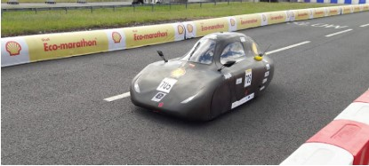
The vehicle the carrier was designed for, on track at the Shell Eco-marathon.
A single static load case isn't enough to certify a suspension component — the carrier has to survive braking, cornering, and impact events too. Six representative load cases were derived and applied at the hub interface to cover the part's full operating envelope:
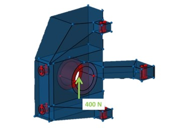
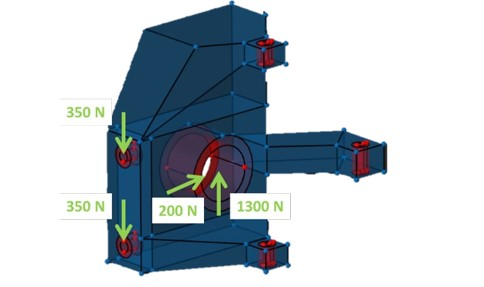
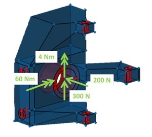
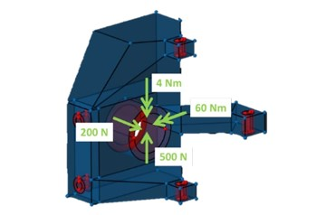
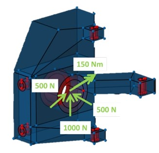
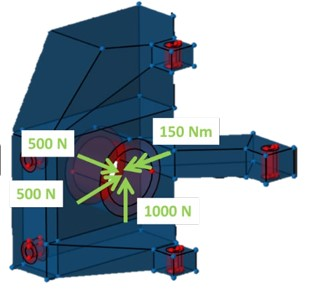
The three mounting interfaces were constrained to match how the carrier actually attaches to the suspension: a full 3D pin at one bolt group, a pin in the XY plane at another, and a roller allowing motion only along Y at the third — reproducing a statically determinate, realistic support condition for the optimization run.
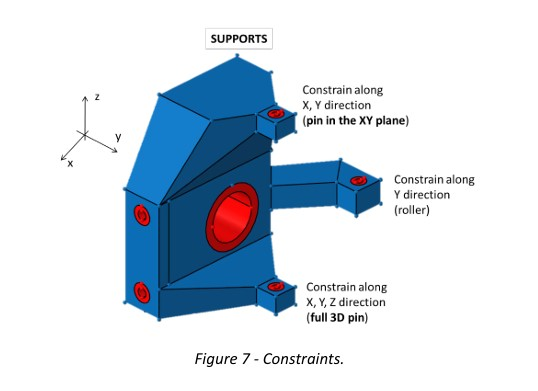
Support definitions at each mounting interface.
Running the density-based topology optimization across all six load cases converged on a clear, efficient load path: material consolidated around the bolt bosses and the primary load-carrying ribs, while low-density regions elsewhere were candidates for removal.
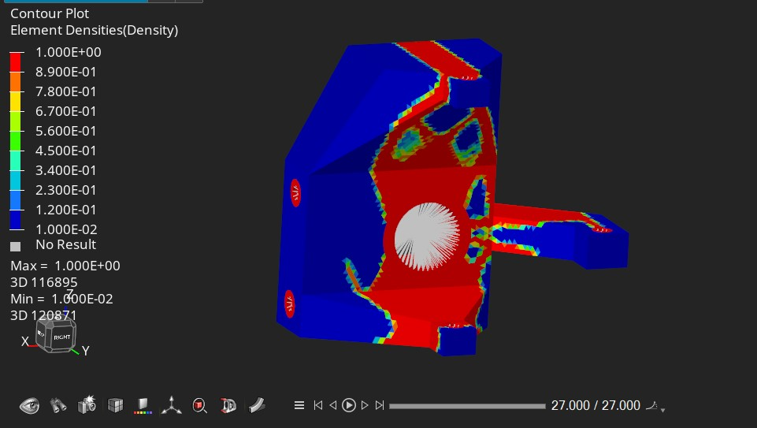
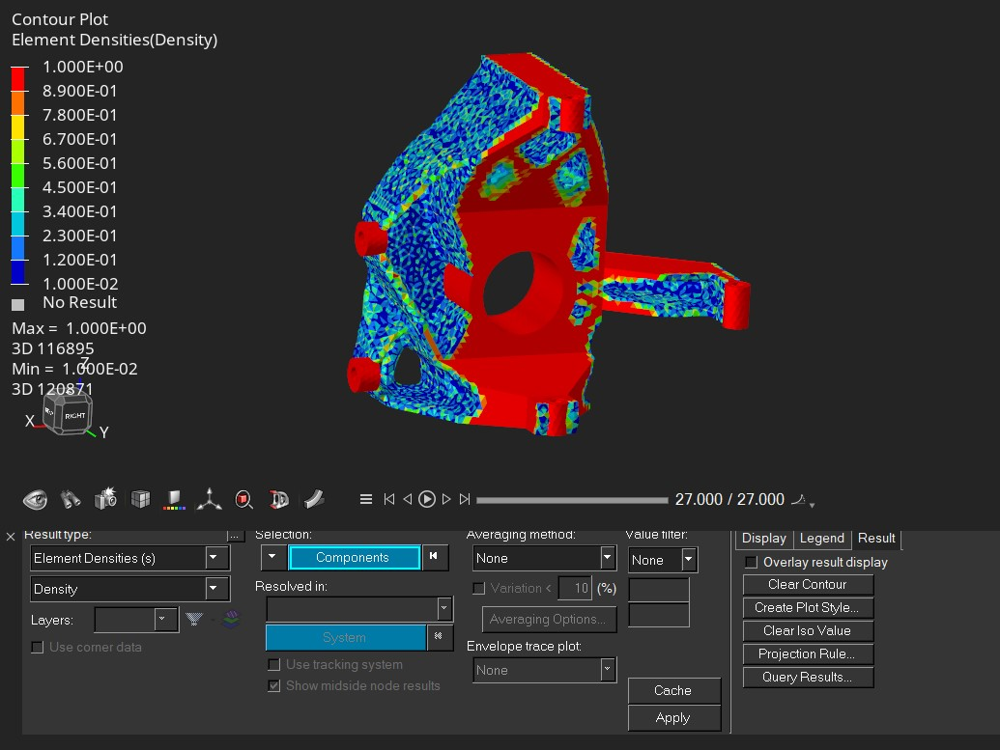
Element density results (red = retain material, blue = remove) from two viewing angles.
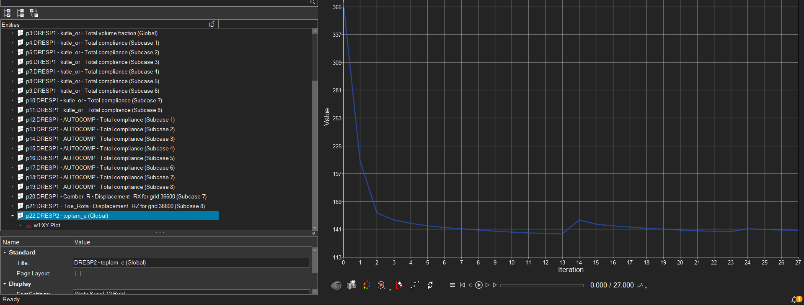
The objective function converged smoothly over 27 iterations.
The optimized density field was interpreted into a manufacturable shape, keeping the high-density load paths and removing the rest — reducing mass while preserving stiffness at every constrained interface.
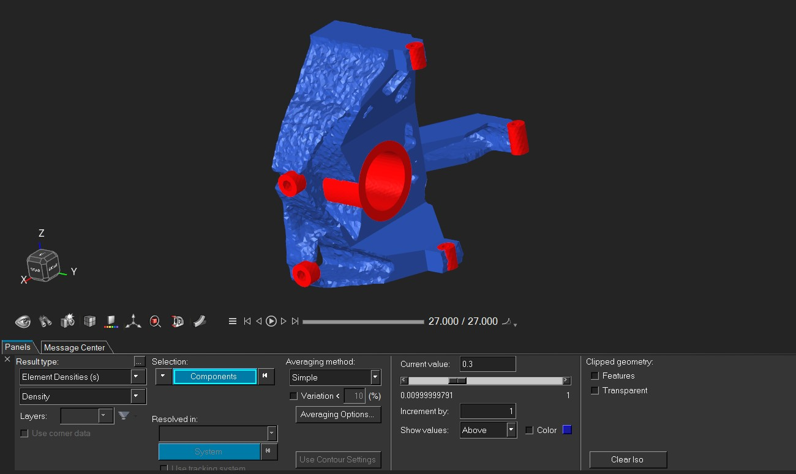
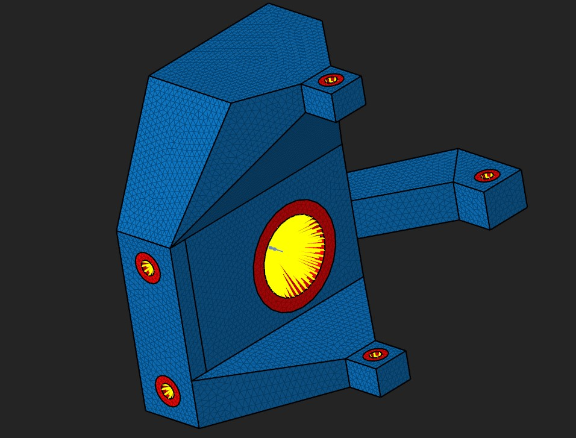
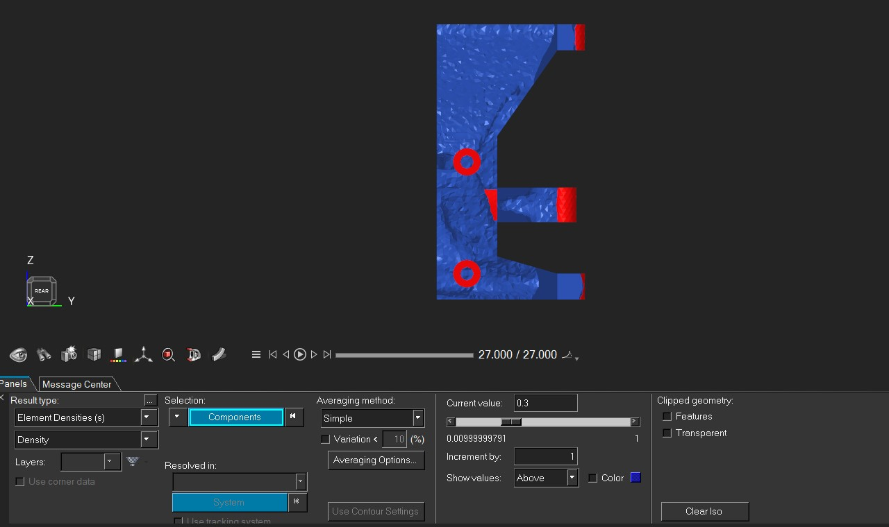